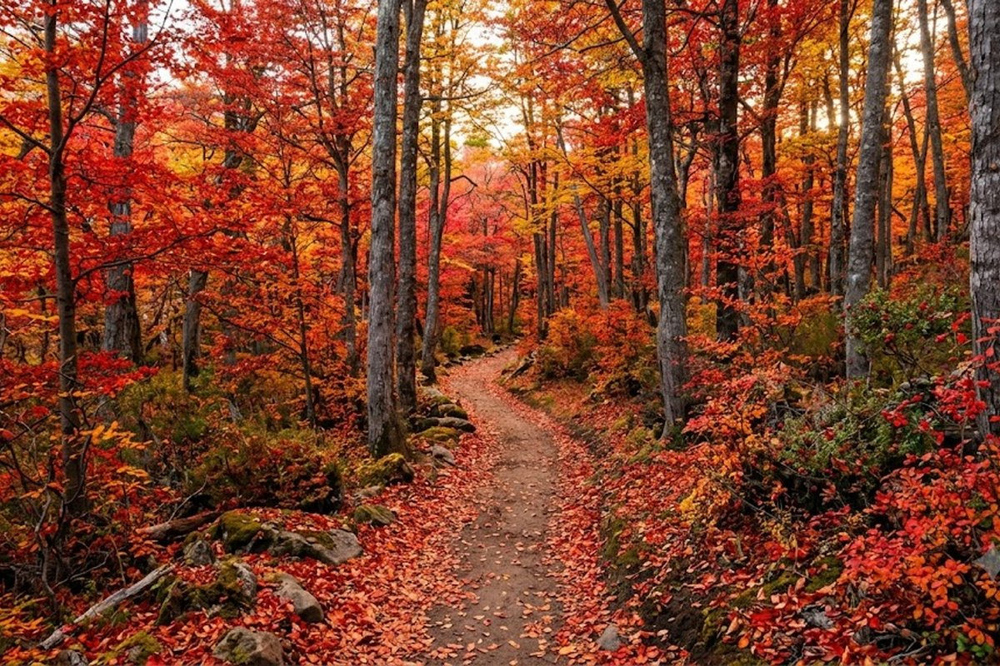
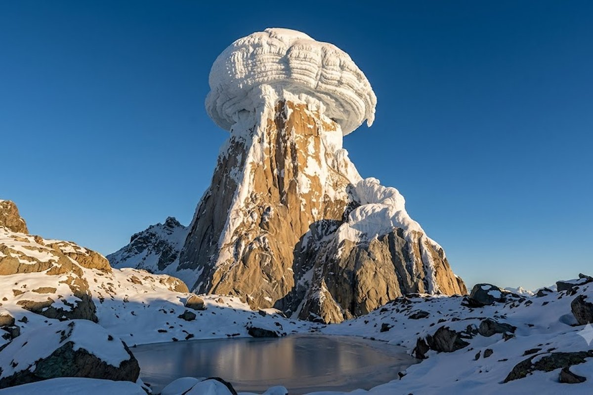
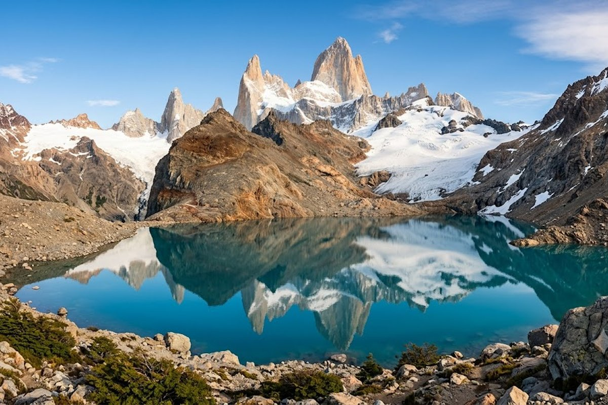
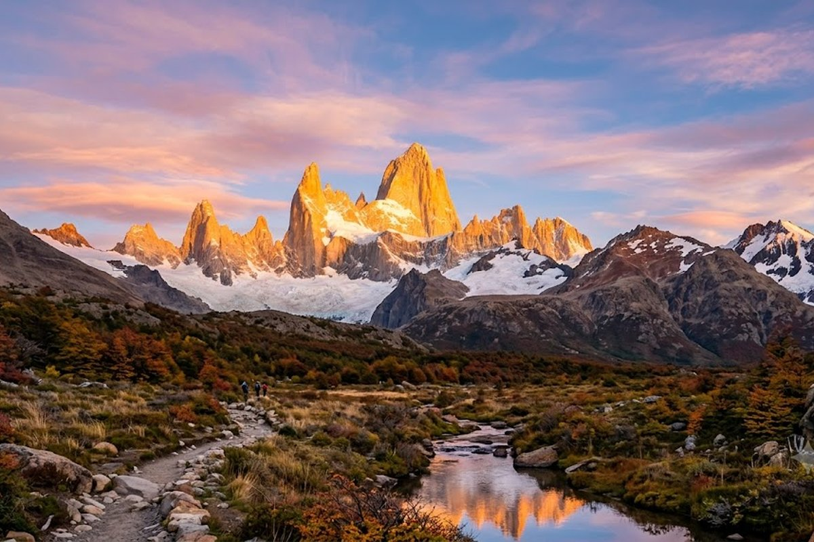

La capital nacional del trekking. Senderos gratis, vistas que cortan la respiración y el Fitz Roy iluminado al amanecer.
El Chaltén es el secreto mejor guardado de la Patagonia argentina. Un pueblo de apenas 1.500 habitantes donde todos los senderos empiezan en la calle principal y terminan en vistas que parecen pintadas. El Fitz Roy y el Cerro Torre son dos de las montañas más fotografiadas del planeta — y los senderos para verlos de cerca son completamente gratuitos y no requieren guía.



El trekking más icónico: 22 km ida y vuelta con 800m de desnivel. Al llegar a la laguna, el Fitz Roy aparece en toda su magnitud. Moderado-exigente.
Trekking de 18 km ida y vuelta más accesible que el Fitz Roy. El Cerro Torre con su aguja de hielo es aún más dramático en días nublados.
A 37 km de El Chaltén, el lago del Desierto es la joya escondida: agua verde esmeralda y silencio absoluto.
Trekking corto (3hs) con vista al glaciar Piedras Blancas. Ideal para quienes no quieren hacer el Fitz Roy completo.
El Chaltén tiene varias cervecerías artesanales propias. Después de un día de trekking, la Cervecería El Chaltén es el lugar.
Los cóndores son parte del paisaje cotidiano en los senderos. Con suerte, los ves planeando a pocos metros.
Los senderos del Chaltén son gratis y no necesitan guía — pero sí hay que registrarse en el centro de informes al entrar al pueblo (obligatorio y gratis). El Fitz Roy es un trekking largo: salí antes de las 7am para evitar el viento de la tarde y tener luz en la cima. Las lengas en otoño (abril-mayo) convierten todo en un incendio de colores — es el momento más fotogénico del año.
Combinación ideal: El Chaltén se visita casi siempre desde El Calafate (3 horas por ruta o excursión de día). Si tenés más tiempo, quedarte 2-3 noches en Chaltén y después ir a Calafate es la mejor secuencia.
¿Qué nivel de dificultad tienen las caminatas?
Hay para todos los niveles. La Laguna Torre (18 km) es accesible para personas en buena condición física sin experiencia técnica. La Laguna de los Tres (22 km, 800m de desnivel) es más exigente pero no requiere equipo especial. En ambos casos, zapatillas de trekking y ropa de abrigo son indispensables.
¿Se puede ir sin ser trekker experimentado?
Sí. Hay varios senderos cortos (3-5 horas) con vistas increíbles sin necesidad de gran esfuerzo físico. El Mirador del Fitz Roy desde el pueblo es uno de ellos. El Chaltén no es solo para deportistas extremos.
¿Hay algo para hacer además de trekking?
Sí: cervecerías artesanales, kayak en el Lago del Desierto, fotografía de fauna (cóndores, guanacos, zorros), y simplemente sentarse en el pueblo a mirar las montañas cambiar de color con la luz.
¿Se combina siempre con El Calafate?
Casi siempre. Están a 3 horas por ruta y el circuito natural es Calafate (glaciares) + Chaltén (montaña y trekking). Se puede ir en excursión de día desde Calafate o quedarse 2-3 noches en Chaltén.
Armamos el circuito patagónico completo con todo incluido.
💬 Consultar con Gemicheck